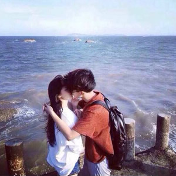
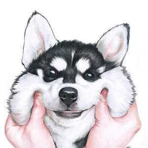
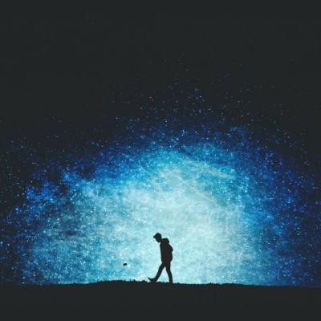
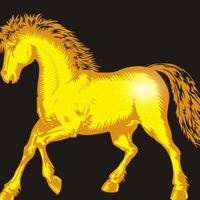
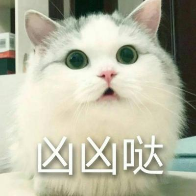
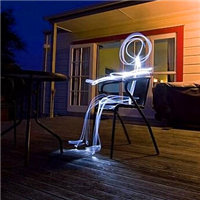
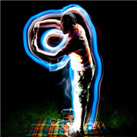

- 静绾青丝待君归
- 【在线】人生的磨难是很多的，所以我们不可对于每一件轻微的伤害都过于敏感。 在生活磨难面前，精神上的坚强和无动于衷是我们抵抗罪恶和人生意外的最好武器。

- 花自无心水自闲
- 【在线】人生并不像火车要通过每个站似的经过每一个生活阶段。人生总是直向前行走，从不留下什么
- 银烛秋光冷画屏
- 【在线】在漫长的人生道路上，无论是狂风暴雨，或是激流险滩。最要紧的是人生的欲火不能熄灭。
- 静绾青丝待君归
- 【在线】爱的力量大到可以使人忘记一切，却又小到连一粒嫉妒的沙石也不能容纳。
- 笑对酒中影
- 【在线】人生的磨难是很多的，所以我们不可对于每一件轻微的伤害都过于敏感。 在生活磨难面前，精神上的坚强和无动于衷是我们抵抗罪恶和人生意外的最好武器。

- 独自莫凭栏
- 【在线】嚣张、冷酷、狂躁、冷漠，不是善良人用的字眼；坚强、充实、自由、奋斗进取与悲观的人无缘。
- 红泪垂百事非
- 【离线】青年恋爱不一定一帆风顺，酸甜苦辣才有真情。
- 青眼高歌俱未老
- 【离线】如果一本书就改变了你的人生观，只能说明你读的书太少了； 如果一张碟就改变了你的价值观，只能说明你没有价值观。
- 走成熟路线
- 【在线】不被别人打败的唯一法宝就是比别人学的更快一步。
- 岁月并非如歌
- 【在线】为什么要那么痛苦地忘记一个人，时间自然会使你忘记。 如果时间不可以让你忘记不应该记住的人，我们失去的岁月又有甚么意义？

- 年少轻狂，那并不是爱情
- 【在线】当地球度转弯，白天就要变成黑夜；当地球继续度转弯，黑夜又恢复白天。 当我们为了一个人度转弯， 我们背对着自己的叹息；当我们为了自己再次度转弯，其实一切都可以重新开始！
- 受了伤、连微笑都彷徨
- 【在线】同样的一瓶水，便利店里块钱，五星级酒店里却块。很多时候， 一个人的价值取决于所在的位置。

- 爱是从告白开始的
- 【在线】我曾经是个无泪的天使当遇到我心爱的 王子流泪坠入凡间但我不后悔因为我知道有他的陪伴我依然会是个无泪幸福的天使
- 善良是我本性
- 【在线】人生最大的烦恼，不是选择，而是不知道自己想得到什么， 不知道到了生命的终点，自己想有些什么人在身边！
- 从此，记忆里只有你
- 【在线】成功的花朵开放在勤劳的枝头，失败的苦果孕育在懒惰的温床之中。

- 用笑宣泄悲伤
- 【在线】别人可以替你开车，但不能替你走路；可以替你做事，但不能替你感受。 人生的路要靠自己行走，成功要靠自己去争取。天助自助者，成功者自救。
- 泪已落下，问君知否
- 【在线】不要因为小小的争执，远离了你至亲的好友，也不要因为小小的怨恨， 忘记了别人的大恩。

- 忘忧草、渲染青涩流年
- 【在线】成功的人的周围，环绕着鲜花和掌声；失败的人的前后，浸透着汗水和奋斗。 成功的歌是用鲜花和掌声为音符而谱成的乐曲，失败的歌是用牺牲和奋斗为号子而写成的催人奋进的战歌。

- 迷雾遮住眼睛
- 【在线】诚实的人的精神世界的空间是有限的。善念多了，恶念少了；信念多了，消磨少了； 追求多了，无聊少了。诚实是一块板子，坦率是另一块板子。这两块板子可以夹得你很直。

- 酒暖回忆思念瘦
- 【离线】春的萌动、夏的奋发、秋的成熟、冬的蛰伏， 自然以季节为单位延续着它的生命，季节是它回响曲中的每个段落。
- 痛过之后方醒悟
- 【在线】不要等每一盏灯都熄灭，才期盼光明；不要等折断了翅膀，才怀念广阔的蓝天。